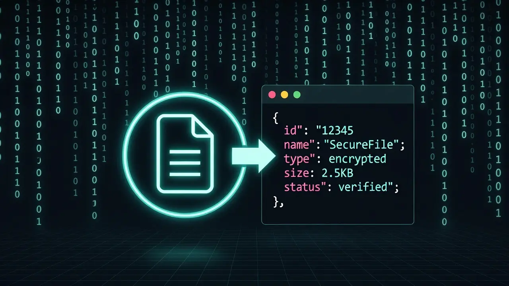

Cookie Converter Pro Max
Securely Convert Netscape to JSON & Vice Versa. Edit & Clean Cookies Instantly.

How to Use This Tool (Step-by-Step)
Converting cookies between JSON and Netscape formats is seamless. Follow this visual guide for accurate results:
1 Input Session Data
Copy your cookie data from your browser developer tools or extension. Paste the content directly into the Left Input Box.
Figure 1: Paste your raw cookie data here.
2 Auto-Process Conversion
Click the Convert Now button. Our smart engine will automatically detect the input format (JSON or Netscape) and transform it instantly.
3 Optimize & Clean (Recommended)
Before exporting, click the Clean Expired button. This removes invalid or old tokens, ensuring your session file works perfectly with tools like Selenium or cURL.
4 Export & Download
Your clean code is ready in the Right Output Box. Click Copy Result or use Download File to save it.
Figure 2: Successful conversion and download options.
Privacy & Security Architecture
Data privacy is critical when handling session tokens. Unlike many online converters that upload data to a backend server, Trusted Tools Web is engineered for privacy.
Client-Side Processing Technology:
- Zero Data Transfer: Your data never leaves your device. All conversions happen locally within your browser's JavaScript engine.
- Offline Capability: This tool functions 100% offline. You can disconnect your internet after loading the page to verify that no external requests are made.
Supported Formats
1. Netscape HTTP Cookie File
The industry standard for command-line tools. It allows utilities like cURL, Wget, and Python Requests to authenticate requests using a simple text file.
Structure: Tab-separated values: Domain, Flag, Path, Secure, Expiration, Name, Value.
2. JSON (JavaScript Object Notation)
The modern standard used by browser extensions and JavaScript frameworks. It provides a structured, readable format that allows developers to easily inspect and modify session attributes.
Use Cases for Developers
This utility is an essential part of a web developer's toolkit. Common scenarios include:
- Cross-Browser Testing: Migrate session states between Chrome (JSON) and Firefox/Safari (Netscape) to test application behavior without re-authenticating.
- API Debugging: Generate valid cookie files for
cURLor Postman to test authenticated API endpoints directly from the terminal. - Automation Scripts: Format cookies for use with Selenium WebDriver or Puppeteer to simulate user sessions in automated testing pipelines.
Integration with cURL & Wget
For DevOps engineers, the Netscape format is a requirement for many CLI tools. For example, wget uses the --load-cookies flag which requires a specifically formatted text file.
This tool bridges the gap between browser data (JSON) and terminal applications, allowing seamless session import for debugging server responses.
Selenium & Automation Support
Automation frameworks like Selenium WebDriver often require cookies in a specific JSON structure (array of dictionaries). Legacy data sources, however, might provide Netscape text files.
This converter transforms legacy Netscape files into JSON arrays compatible with driver.add_cookie(), streamlining the setup process for test automation suites.
Importance of Cleaning Expired Sessions
Importing expired cookies can cause authentication failures in scripts. Browsers handle this automatically, but raw text files do not.
Our Clean Expired algorithm parses timestamps and removes any entries that are no longer valid. This ensures your exported file contains only active session tokens, reducing debugging time.
Handling 'HttpOnly' & 'Secure' Attributes
The HttpOnly flag is a vital security feature protecting cookies from XSS attacks. Standard Netscape files do not have a dedicated column for this.
To maintain security integrity, we follow the convention of prepending #HttpOnly_ to the domain name. This ensures that tools respecting this convention will treat the cookie with the appropriate security level.
Troubleshooting Common Errors
If you encounter parsing errors, verify the input integrity. A common issue is "Line Wrapping" where long strings break into new lines.
Ensure your input does not contain raw HTTP headers (e.g., Cookie: ...). This tool expects raw JSON objects or standard tab-separated Netscape lines.
Legal Disclaimer
Trusted Tools Web provides this utility strictly for Development, Debugging, and Educational purposes.
- Misuse of this tool for unauthorized access, session hijacking, or bypassing security controls is strictly prohibited.
- We do not condone the violation of any third-party Terms of Service.
- Privacy Note: This tool operates 100% Client-Side. No data is stored or transmitted by our servers. Users are solely responsible for their data usage.
Initializing secure discussion portal...